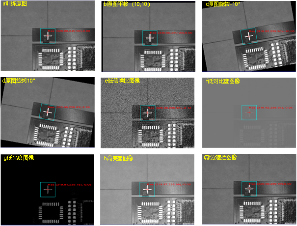
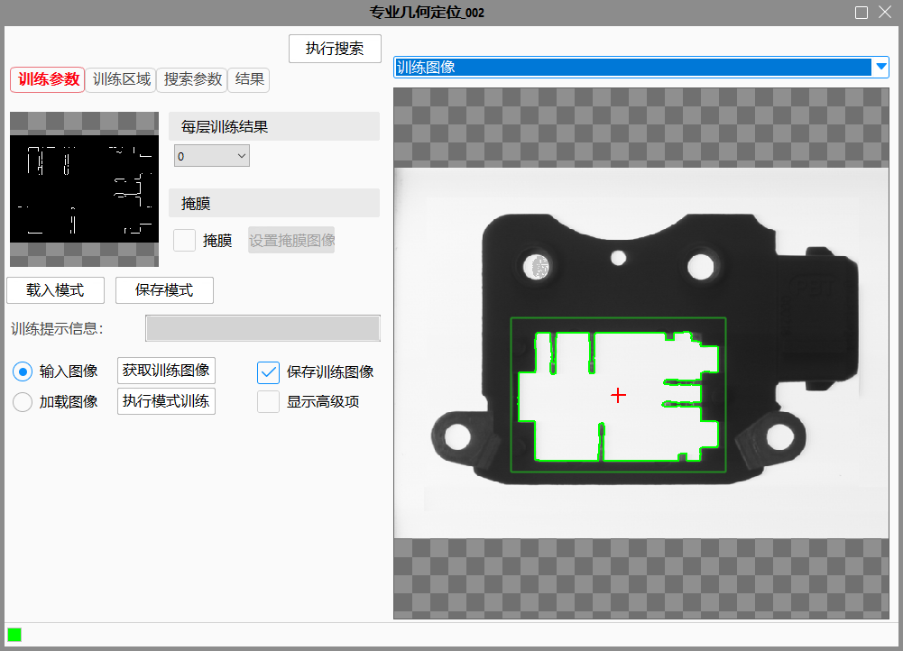
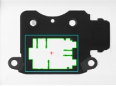
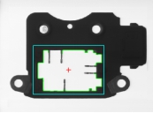
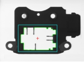
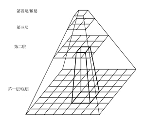
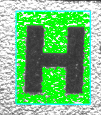
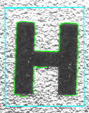
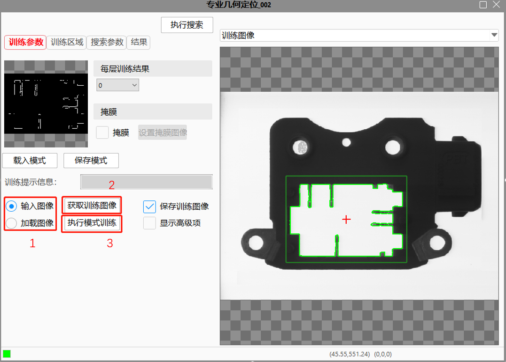

专业几何定位工具能够在实时图像中进行一个到多个实时模式与训练模式之间的匹配，定位结果包含了匹配分数、位置、角度等诸多信息。
图1是一种典型定位案例，图中十字标记作为训练模式特征，训练位置坐标(320,240)。其中：a为训练原图；b为训练原图经过平移(10,10)；c为训练原图旋转-10°；d为训练原图旋转10°；e为低信噪比图像；f为低对比度图像；g为低亮度图像；h为高亮度图像；i为部分缺失图像。上述多种情况下，定位工具均能给出高精度定位结果。

根据训练的几何特征，找出匹配几何的位置，给出结果个数、结果数组。
专业几何定位工具通过模式训练来获取目标的几何特征描述，几何特征可以精确、快速的进行旋转、缩放等变换，且对图像灰度线性、灰度非线性变化具有良好的适应性。专业几何定位工具在实时图像中搜索训练模式，计算实时图像中结果模式的位置、其相对于训练模式的角度和相对于训练模式的缩放。
工具执行流程：配置输入→设定属性→训练图像→执行搜索。
双击工具在弹出窗口中配置输入图像，如图2
属性栏设置如图3，右键工具→属性→打开高级界面设置如图4


高级界面中点击“启动掩膜”以及“设置掩膜图像”后，就可以在模板训练过程中，屏蔽掉不参与模式训练的区域，减少参与模式训练的几何特征。
  

图5 ( a )：原始的特征图像，当现场定位只需要白边轮廓而不需要使用向内凹的突起时，可使用掩膜。
图5 ( b )：掩膜工具中被红色覆盖的区域是不参与特征训练的。掩膜好之后，点击“应用”，该掩膜区域就设置成功。
图5 ( c )：掩膜完之后，点击高级界面中的“执行模式训练”，则会生成新的训练模板。
图像金字塔是由原图像逐层滤波下采样得到，上层图像长宽是下层图像的1/2。如图6(a)为图像金字塔抽取示意，图6(b)为实际图像经过抽取金字塔后特征变化。随着金字塔层数的增加，图像分辨率逐步减小，同时随着金字塔层数增加，模式特征减少，细节特征消失。

抽取图像金字塔的目标：
1.加速，在顶层搜索到结果后逐层向下传递并求精，比在原图搜索的计算量大大减少。理论上层数越大越好，但实际到达一定层数后对耗时影响不大，同时层数越大可能会丢失细节信息造成定位不稳定，一般设置为3到5层即可。搜索时可以设置搜索区间，比如一共4层金字塔，可以设置为（4，4）、（4，3）、（4，2）、（3，3）、（3，2）等，（4，4）比（4，2）耗时少。
2.对于磨砂面或者模糊图像，最底层图像无法训练到理想模式，但在其他层可以获得优质的模式，图6(b)为一磨砂面图像，左图绿色线条为底层图像模式，右图绿色线条为第四层顶层图像模式。实际定位时左图模式将失败（杂乱不堪），右图模式则很稳定。当然，右图为第4层则搜索时金字塔搜索区间设置为（4，4），如果右图为第三层则设置为（4，3），实际搜索过程我们可以设置任意的金字塔搜索区间。
右键工具→属性→打开高级界面→训练参数，如图7；

（1）首先选择“训练图像”来源：
a.“输入图像"：训练图像从参数链“输入图像”获取；
b.“加载图像"：训练图像由离线加载方式从文件获取；
（2）点击“获取训练图像”：更新训练图像，点击后会先进行弹框提示；
（3）点击“执行模式训练”：进行训练；
根据设定的搜索参数和判定结果参数返回相应的搜索结果，如图8；

| 注意事项 |
|---|
| 1. 如果有多个定位结果，可以通过脚本工具来获取专业几何定位结果的搜索结果数组中某个搜索结果。 |
| 2. 专业几何定位的多个二维变换结果还可以使用脚本工具获得。 |
| 3. 当手动输入金字塔层数过高，执行训练时达不到时，训练结束会返回一个最高的金字塔层数。 |
| 参数名称 | 参数说明 |
|---|---|
| 训练区域 | 模板图像中参与训练的仿射矩形区域。 |
| 训练标记点 | 手动输入标记点的X轴、Y轴坐标。 |
| 保存训练图像 | 保存工程时，是否保存训练图像。 |
| 自动金字塔 | 是否由算法自动确定金字塔层数。选择否，则在属性窗口显示金字塔层数参数。 |
| 金字塔层数 | 随着金字塔层数的增加，图像分辨率逐步减小，同时随着金字塔层数增加，模式特征减少，细节特征消失。一般按默认值即可。取值范围[1,16]，取值为整数。只有在自动金字塔为否的时候，显示此属性。 |
| 自动噪声 | 是否由算法自动确定噪声阈值。选择否，则在属性窗口显示噪声阈值参数。 |
| 噪声阈值 | 在图像中，像素值低于噪声阈值的部分被认为是噪声，不参与模板训练；像素值高于噪声阈值的部分被认为是图像特征，参与模板训练。一般按默认值即可。取值范围[0,255]，支持小数。只有在自动噪声阈值为否的时候，显示此属性。 |
| 自动边缘强度 | 是否由算法自动确定边缘强度。选择否，则在属性窗口显示边缘强度参数。 |
| 边缘强度阈值 | 模式中所有边界点的幅值的总和。一般按默认值即可。取值范围[1, +∞），取值为整数。只有在自动边缘强度为否的时候，显示此属性。 |
| 接受阈值 | 训练模板与实时搜索结果之间有一个匹配程度的分数，当匹配分数高于接收阈值时表明实时搜索成功。接收阈值的取值范围是(0,1)。 |
| 对比度阈值 | 对比度定义为模式中所有边界点的幅值的平均。用户可以通过设置对比度阈值删除对比度较低的模式。取值范围[1,255]，支持小数。 |
| 重叠比例阈值 | 如果存在多个模式，模式的重复度必须小于重叠比例阈值，否则将删除重复模式。取值范围(0,1]，支持小数 |
| 贪婪度 | 贪婪度表示搜索时的激进程度，主要用于搜索提速。取值范围[0,1]，越接近1速度越快，同时也越不稳定，默认值取0.9。实际使用时与接受阈值配合使用，接受阈值越高，适当降低贪婪度以提高定位稳定性；接受阈值越低，适当提高贪婪度以提升速度。此参数一般不需要调整，调整其他参数达不到需求情况下才考虑调整此参数。 |
| 搜索个数 | 设置最多的搜索结果个数。 |
| 是否开启全图搜索 | 开启全图搜索的开关。当选择“是”时，整幅实时采集的图像都是该工具的搜索范围；当选择“否”时，Edit视图中的“搜索区域”仿射矩形是该工具的搜索范围。搜索区域要大于训练区域。 |
| 搜索模式 | 包含快速、高精两种形式，耗时依次增加，精度依次提升。 |
| 任意极性 | 极性指模式的几何特征的灰度级过渡形式，即从亮到暗或从暗到亮。 |
| 搜索最低/最高角度 | 搜索的角度范围，最低角度>=-360°，最高角度<=360°，最低角度<=最高角度。 |
| 搜索最低/最高缩放 | 搜索时的缩放范围，最低缩放>0，最低缩放<=最高缩放。 |
| 参数名称 | 参数说明 |
|---|---|
| 输入图像 | 输入图像宽度、高度、像素大小。 |
| 训练标记点坐标 | 标记点用于辅助定位。 |
| 结果个数 | 搜索结果个数。 |
| 搜索结果数组 | 搜索结果组成的数组。 |
| 二维线性变换数组 | 二维线性变换是指目标相对于模板的平移、旋转、缩放变换。二维线性变换数组是指在该工具在某一次执行完之后，所有二维线性变换所组成的数组。 |
| 搜索坐标数组 | 搜索坐标是指标记点实时搜索结果，搜索坐标数组是指该工具在某一次执行完后，所有搜索标记点所组成的数组。 |
| 二维线性变换 | 该工具输出的二维线性变换是指该工具二维线性变换数组中的第一组值。 |
| 搜索坐标 | 该工具输出的搜索坐标是指搜索坐标数组的第一组值。它与输出的二维线性变换针对同一个搜索结果。 |
| 执行结果 | 工具执行结果。 |
| 执行时间 | 工具执行时间。 |
参见“\Samples\专业几何定位工具.gvp”。